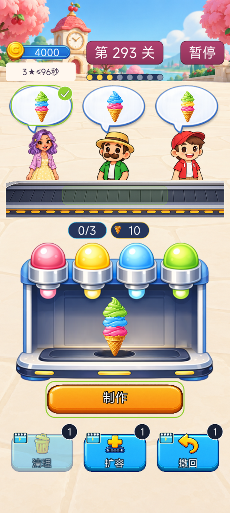
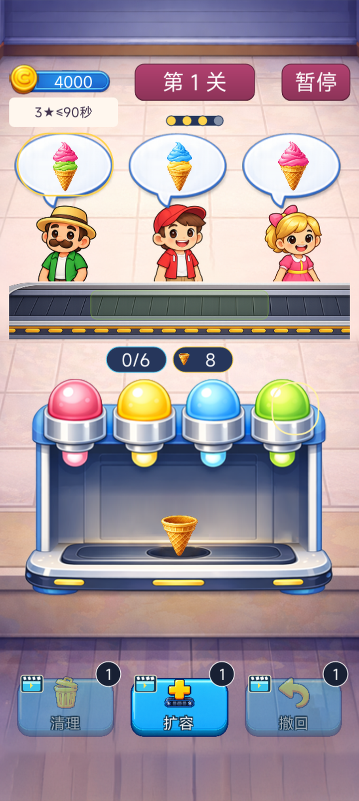

口味顺序形成观察挑战
颜色、层数与中层变化共同组成订单，点按操作保持简单，难点集中在辨认和排列。
TAPTAP MAKER / 个人 AI 游戏实践
叠球配餐 / 订单匹配 / 关卡挑战
看清顾客要的口味层次，点选四色冰球，叠好甜筒后通过传送带交餐。300 关串起不同主题场景，每日挑战与小店装扮提供后续目标。

TapTap 公开测试 · 2026.10.25 核对
GAMEPLAY / 核心体验
根据顾客图文订单辨认从上到下的口味，选择冰球叠成正确配方并交付。当前公开介绍为 300 关，包含多主题场景、每日挑战和金币换主题；普通闯关无需广告，道具、救援及额外奖励由玩家自愿选择。
TAPTAP GALLERY / 游戏展示图
以下来自 2026.10.25 核对的 TapTap 公开游戏页展示图；保留原图，部分含商店宣传文案，不冒充本次重新运行游戏的实机录制。
点击任意截图可查看原图。 多张画面可左右滑动，也可聚焦图库后使用方向键浏览。

DESIGN / 规则与取舍
颜色、层数与中层变化共同组成订单，点按操作保持简单，难点集中在辨认和排列。
海岸、林地、灯塔等场景为长线推进提供环境变化，公开介绍已由早期60关扩展为300关。
叠放、传送和顾客拿餐连成一条可见流程，让正确配方不仅体现为数字变化。
把常规挑战与自愿道具、救援和额外奖励分开，公开描述为无内购；本页不推断实际转化或收益。
MY PRACTICE / 项目推进
以 AI 协作将 Unity 原型迁移至 Maker，围绕订单规则、关卡节奏、操作教学和通关反馈持续打磨。重点迭代顾客接餐动作、持物位置、长文字自适应和顶部宿主安全区，并结合手机显示与按钮操作反馈推进版本验收。
TAPTAP / 游戏入口
试玩入口与当前可玩版本以 TapTap 游戏页为准；公开介绍中的功能和数量属于开发者在平台展示的信息。